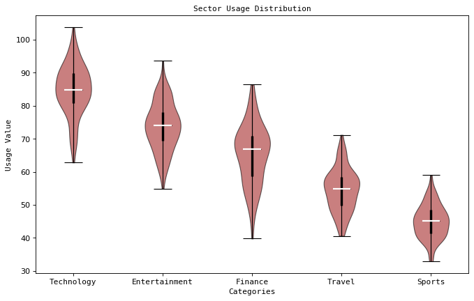
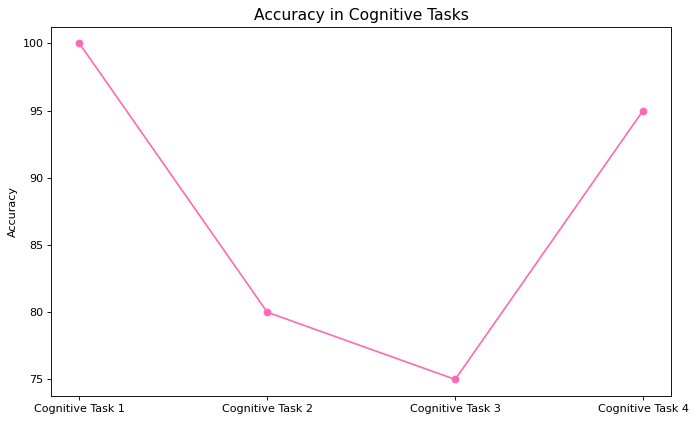
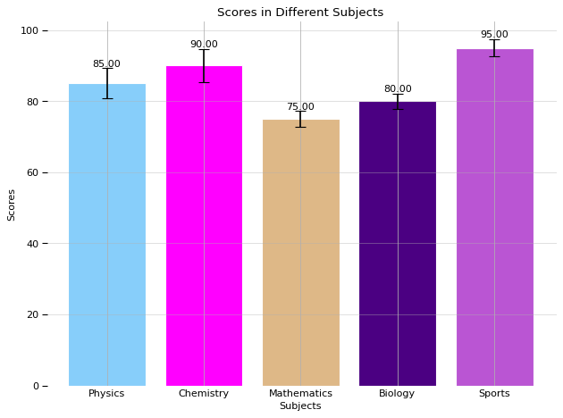

Total failure cases of factor "operation": 4
| ID | Chart | Question | Additional Information | Pitfalls | Most relevant pitfall |
484.png |
 |
What is the difference between the largest and third largest lower whisker values?
|
{
"Ground Truth": "10",
"Prediction": "20"
}
|
### Potential Pitfalls in the Chart Image: 1. **Visual Estimation Difficulty**: The exact numerical values of the lower whiskers are not labeled, making it challenging to estimate their precise values visually. This can lead to errors in calculating differences. 2. **Overlapping Elements**: The violin plot elements such as the box and median line might obscure the whiskers slightly, leading to difficulty in identifying the lower whisker accurately. 3. **Scaling and Resolution**: The y-axis scale and resolution may not be fine enough to distinguish small differences between values, especially when the difference is subtle. 4. **Color and Contrast**: The dark brown color of the violin plot and the black whiskers may blend together, reducing contrast and making it harder to discern the exact position of the whiskers. ### Most Relevant Pitfall: The most relevant pitfall causing the error in estimating the difference between the largest and third largest lower whisker values is the **visual estimation difficulty** due to the lack of labeled numerical values. <most_relevant>Visual Estimation Difficulty</most_relevant> |
Visual Estimation Difficulty |
783.png |
 |
How are the data points visually represented using the determined color and marker shape?
|
{
"Ground Truth": "The data points are visually represented as circles along the line with the specified pink color.",
"Prediction": "<circles>"
}
|
First, let's identify potential pitfalls in the chart image that could cause the model's error: 1. **Lack of Explicit Marker Description**: The chart does not explicitly label or describe the markers, which may lead the model to infer only "circles" without associating the color. 2. **Color Perception Issues**: The specific shade of pink (`#FF69B4`) might not be clearly identified by the model if it lacks detailed color recognition capabilities. 3. **Line vs. Marker Confusion**: If the model focuses more on the line rather than individual markers, it might miss the specific representation of data points. 4. **Missing Contextual Information**: Without additional context about the code or explicit annotations in the chart, the model might fail to fully understand the visual representation. Second, the most relevant pitfall to this error is the **lack of explicit marker description**. The model likely identified the shape of the markers correctly as "circles," but it did not associate the specified pink color due to the absence of explicit visual cues linking the marker color to the data points. <most_relevant>Lack of explicit marker description</most_relevant> |
Lack of explicit marker description |
783.png |
Given the title 'Accuracy in Cognitive Tasks' and the y-axis label 'Accuracy', what does the chart illustrate?
|
{
"Ground Truth": "The chart illustrates the accuracy levels for different cognitive tasks.",
"Prediction": "Variation"
}
|
### Potential Pitfalls in the Chart Image:
1. **Lack of X-axis Label**: The absence of an explicit x-axis label could lead to confusion about what the horizontal axis represents. Although the categories ('Cognitive Task 1', etc.) are clear, not having a label might make some viewers unsure about the context.
2. **Variation Misinterpretation**: The sharp rise and fall in the line chart can give the impression of "variation" rather than simply illustrating accuracy levels. The dramatic change between points might mislead someone into thinking the focus is on how much the values fluctuate rather than their specific values.
3. **Title and Axis Misalignment**: While the title and y-axis label clearly state "Accuracy," the visual emphasis on the changes between data points may overshadow this information. This misalignment between the visual cues and textual labels can confuse the viewer.
4. **Omitted Specificity in Title**: The title "Accuracy in Cognitive Tasks" does not explicitly state that it shows *levels* or *values* of accuracy, which might be inferred but isn't directly stated.
---
### Most Relevant Pitfall:
The most relevant pitfall leading to the model's error is the **visual emphasis on variation** due to the sharp fluctuations in the line chart. This draws attention away from the primary purpose of displaying specific accuracy levels for each task.
<most_relevant>Visual emphasis on variation</most_relevant>
|
Visual emphasis on variation |
|
859.png |
 |
The score for Physics is 85, and the score for Sports is 95. What is the ratio of the score for Physics to the score for Sports?
|
{
"Ground Truth": "0.8947",
"Prediction": "17:19"
}
|
### Potential Pitfalls in the Chart Image: 1. **Annotation Confusion**: The scores for each subject are annotated directly on the bars (e.g., "85.00" for Physics and "95.00" for Sports). If the annotations were not clear or misaligned, it could lead to incorrect interpretation. 2. **Color Distraction**: The use of distinct colors for each bar might distract from the numerical values. If someone relies too heavily on visual comparison instead of reading the exact numbers, they might estimate incorrectly. 3. **Error Bars Misinterpretation**: The error bars, though small, might give the impression that the values are approximate rather than exact. This could lead to rounding errors or incorrect assumptions about the precision of the data. 4. **Ratio Calculation Mistake**: The model may have attempted to simplify the ratio by reducing it to its simplest form (17:19), which is mathematically correct but not in decimal form as required. ### Most Relevant Pitfall: The primary issue seems to be related to the final step of converting the ratio into the correct decimal form. The model likely calculated the ratio correctly as 17:19 but did not convert it to the decimal equivalent of 0.8947. Therefore, the most relevant pitfall is: <most_relevant>Not converting the simplified ratio 17:19 into its decimal form of 0.8947</most_relevant> |
Not converting the simplified ratio 17:19 into its decimal form of 0.8947 |